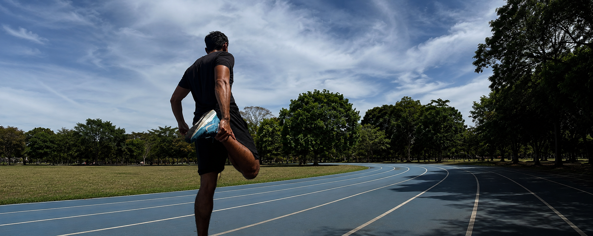

Soy Jose, creador de contenido costarricense conocido en redes sociales como Jox Physique. Mi contenido está enfocado en ayudar a las personas a construir hábitos saludables mediante el entrenamiento, el gym, el running, la nutrición, el desarrollo personal y el estilo de vida — con un enfoque cercano, educativo, basado en evidencia y, sí, con algo de humor (porque no todo en el gym tiene que ser cara seria en el espejo).
Mi objetivo siempre ha sido el mismo: demostrarle a la gente que sí se puede tener un buen físico, sin importar las circunstancias. Motivo a mis seguidores a entrenar, a moverse y a tomarse en serio tanto su salud física como su salud mental, y aunque no me enfoco tanto en nutrición a fondo, sí comparto recomendaciones prácticas que realmente pueden aplicar en su día a día.
Busco convertirme en un referente del mundo fitness: un ejemplo y una figura a seguir para quienes quieren empezar o mantenerse constantes en su proceso. Lifting serio, disciplina diaria y contenido que documenta el proceso real, no solo el resultado final.
Publico contenido de forma diaria y mi objetivo es crear colaboraciones auténticas con marcas cuyos productos realmente formen parte de mi estilo de vida.
Además de Instagram, supero las 300K visualizaciones mensuales en TikTok, y publico el mismo contenido en Facebook y YouTube — una comunidad multiplataforma que consume el contenido de forma consistente semana tras semana, no solo picos aislados de viralidad.
Contenido dinámico y de alto alcance, pensado para mostrar producto en movimiento real.
Contacto cercano y diario con la comunidad, ideal para menciones y seguimiento de uso.
El producto se muestra dentro de mi entrenamiento y estilo de vida real, no como anuncio aislado.
Explicaciones claras y con base en evidencia, alineadas a mi enfoque habitual.
Opiniones reales sobre el producto, priorizando la confianza de mi audiencia.
Explicación práctica de por qué y cómo integrar el producto en una rutina saludable.
Cada colaboración se construye desde la autenticidad: solo trabajo con marcas cuyos productos realmente uso e integro en mi rutina.
Creo contenido que genera confianza. Mi prioridad no es únicamente mostrar un producto, sino explicar cómo utilizarlo, por qué puede aportar valor y cómo integrarlo de forma natural dentro de un estilo de vida saludable — sin perder el humor en el camino.
Escríbeme por cualquiera de mis redes para conversar sobre propuestas de contenido.